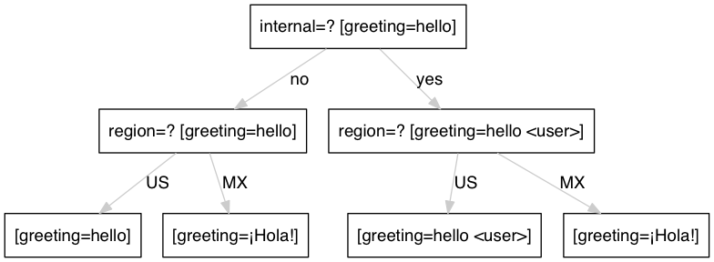

Concepts¶
Context¶
The context is the dimension map for the given set of keys. The default context is known as the “master” context. All keys must be listed in the “master” context. Contexts have an order associated with them so that conflicts can be resolved by the configuration compiler. The following is an example showing dimension priority:
---
- dimensions:
- internal
- region
- context: master
greeting: hello
- context: { internal: yes }
greeting: hello <user>
- context: { region: MX }
greeting: ¡Hola!
In the above example the decision tree looks like this:
Keys¶
Keys (aka settings or properties) are main interface to a configuration and is the set of keys it defines values for. This set of keys is well-defined, and the code using the configuration can expect all keys to be defined for any given request. As such, we declare the keys available from a given configuration along with its base value to use if it isn’t set for a particular request context.
All keys must be assigned a type and default value. To define the default value a key will be defined in the “master” context. Here is an example:
---
- context: master
greeting: hello world
num_ads: 1
- context: { product: search }
num_ads: 4
In the above example the key types and default values are defined as:
- greeting - Type: string - Default Value: “hello world”
- num_ads - Type: integer - Default Value: 5
Note
Once defined in the “master” context a key’s type cannot be modified
Primitive Types¶
string¶
String keys represent a sequence of zero or more unicode characters. This type is typically bound to the string or character pointer type depending on the language. The following is an example of a configuration using strings:
---
- context: master
greeting: hello world
is_string: !!str 1
- context: { region: australia }
greeting: "Cheers! �"
Note
the ”!!str” tag denotes the value is a string
integer¶
Integer keys represent a whole number. When values are not integers but they are cast using the ”!!int” tag the value will be converted at runtime. The following is an example of a configuration using integers:
---
- context: master
num_ads: 2
- context: { product: search }
num_ads: !!int 4.1
Note
the ”!!int” tag denotes the value is an integer
boolean¶
Boolean keys represent a true/false value. The following values are mapped to “true” and “false” respectively:
- true - true - 1 - yes
- false - false - 0 - no
Here are a few examples:
---
- context: master
show_ads: no
is_internal: true
is_boolean: !!bool 1
Note
the ”!!bool” tag denotes the value is a boolean
sequence¶
Sequences (aka arrays or lists) represents a collection indexed by sequential integers starting with zero. Care must be taken to insure that the type of the list’s values is maintained throughout all items. The contextual override behavior is to push new elements to the back of the list. The following is an example of a configuration using sequences:
---
- context: master
positions:
- ov-top
- ov-bot
- ov-east
primes: [1,2,3,5,7,11,13]
- context: { tier: FE }
# The following appends ov-west to the end
positions:
- ov-west
# The following will cause a compilation failure
# since there is a type mismatch for the sequence
primes:
- seventeen
Note
the ”!!seq” tag denotes the value is a sequence
mapping¶
Mappings (aka maps) represent an associative container, where each key is unique in the association and mapped to exactly one value. Depending on the language these may be converted into Hash Maps or Classes. Contexual override behavior requires the same structure and type. The following is an example of a configuration using mappings with a contextual override:
---
- context: master
a_mapping:
date:
format: 'mm/dd/yyyy'
show_epoch: 1
another_mapping: foo { bar: 'hello world' )
- context: { tier: FE }
# notice the structure of the following matches
# the master context
another_mapping: foo { bar: 'baz' )
Note
the ”!!map” tag denotes the value is a mapping
Complex Types¶
In cases where the type can not be intuited there is a need to explicitly define the type. These are known as complex types. There are currently three complex types:
- Hash Maps
- Regular Expressions
- Sets
To instruct the compiler that a value is of a specific complex type you must provide a ‘!name’ directive before the value appears. In the case of dynamic the prefix must be ‘!!dynamic’.
Here is a simple example:
---
- regular-expressions:
color: '#[0-9a-fA-F]{3}'
- context: master
bgcolor: !color '#fff'
In this case the above type of bgcolor is ‘color’ which can be either a set or a regular expression.
This typing allows built-in validation for configurations and removed the need for additional ‘unit’ testing.
Hash Maps¶
Key values can be forced to match a hash map type where the hash map contains a specific type. For example, all hash map values must be an integer or a string.
---
- context: master
query_parameters: !!dynamic
fr: sfp
fr2: offsite
n: "10"
In the above example, the query_parameters hash map contains a number of query parameters. Notice the type of each must be the same. This list can then be extended to include additional parameters.
The following example overrides the previous defined key ‘n’ with value ‘12’ and adds a new key ‘o’ with value set to ‘10’
---
- context: { language: en-US }
query_parameters:
n: "12"
o: "10"
Regular Expressions¶
Key values can be forced to match a given regular expression. This is useful for preventing invalid configurations from reaching production. Each regular expression has a name which can be activated using the complex ”!name” tag format.
Here is an example:
---
- regular-expressions:
color: '#([0-9a-fA-F]{3}){1,2}|blue|cyan|gray|green|orange|purple|red|yellow|cream'
Then you can assign a color using the following:
---
- context: master
bgcolor: !color '#fff'
fgcolor: !color blue
When there is a failure to match a given regex for a specific value, like this:
---
- context: master
bgcolor: !color '#ffg'
fgcolor: !color blue
you will see the following error at build time:
content "#ffg" did not match regular expression "color"
Regular expressions referenced into master settings, are also implicitly applied to overriden values. For example:
---
- context: { language: en-US }
bgcolor: '#ffg'
Produces the same error at build time:
content "#ffg" did not match regular expression "color"
Sets¶
Key values can be forced to match a value from a list of values. This is useful for preventing invalid configurations from reaching production. Each set has a name which can be activated using the complex ”!name” tag format.
Here is an example:
---
- sets:
ad_position:
- north
- south
- east
- west
Then you can assign a color using the following:
---
- context: master
top_ad_position: !ad_position north
bottom_ad_position: !ad_position south
right_ad_position: !ad_position east
left_ad_position: !ad_position west
When there is a failure to match a given regex for a specific value, like this:
---
top_ad_position: !ad_position upper-deck
you will see the following error at build time:
content "upper-deck" did not match set "ad_position"
Type Casting¶
In some cases there might be a desire to override the type of a key. For example, if you have a number that you would like to store as a string instead. Here are some examples of type casting:
---
- context: master
an_int: !!int 1.2
a_boolean: !!bool yes
a_float: !!float 1
a_mapping: !!map date { format: 'mm/dd/yyyy', show_epoch: 1 }
a_null: !!null NULL
a_sequence: !!seq [1,2,3]
a_string: !!str 1
Note
Since a key’s type must be maintained throughout all contexts, the type must be defined in the master dimension.